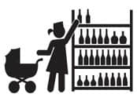

Bir sonraki durak: En yakın alışveriş merkezi
E şimdi tabii ben de bilirim, al çocuğunu git yeşil alanlara seril, kuş sesleri, su sesleri, mangal kokusu, amaaaan akşamlar olmasın. Ama nereye kadar? Burada mevzu şu: Bu çocuk doğduğu andan itibaren sana yapışıp kalacak. İşe giderken götürmek mümkün olsaydı, hiç tereddütsüz oraya da gelirlerdi.
Mecbursun, bütün aktivitelerini onunla birlikte yapacaksın. Ev alışverişine giderken, dışarı yemeğe çıkarken, kendine üst baş alayım diye çıktığında, bir kitapçıya vs. gittiğinde ufaklık da seninle gelecek. (Tabii anneanne ve babaanneye satmayı başaramadıysan.) Bunlar kendi kendine yapmaya niyetlendiğin ancak mecburen çocuğu da yanında götürdüğün eylemler. Bir de onunla birlikte yapman gereken aktiviteler var. Ne bileyim işte, herkes hafta sonu çocuklarıyla birlikte dışarda bir şeyler yapmak ister.
İşte böyle durumlarda seni havalar güzel olduğunda parklar, bahçeler, yeşil alanlar, yeşil alanı olan restoranlar kurtarabilir. Fakat yılın yarısı kış. Elin mecbur ısınmak için bir alışveriş merkezine kapağı atacaksın. Neyse ki, onlar da geleceğimizi düşünüp gerekli önlemleri almışlar.
Çocuğu olan bir arkadaşım, ikizler 7-8 aylıktı sanırım, bana, çocukların avm yasağı kalktıysa orada da buluşabiliriz, dedi. Onun çocuk doktoru belli bir aya gelene kadar bebeklere avm yasağı koyuyormuş. Hiç duymadım, dedim, duysaydım götürmezdim. Götürmez, evde kedi gibi oturur, sıkıntıdan patlardım.
İyi tamam, teneffüs edilmiş koşullandırılmış hava, fazla insan, gürültü vs. hak veriyoruz ama ne yapalım canım, arada lazım yani...
Bebek arabasıyla alışveriş merkezinde gezinmek gayet keyifli. Bebek hareketi, gürültüyü sever. O etrafına bakınırken bir bakmışsın uyuyuvermiş. Kalan saatler senindir. Alışveriş çantalarını taşıyabileceğin bir bebek arabası var artık. Yalnız tek başına gitme, kıyafet deneyemezsin. Bebek arabaları kabinlere girmiyor, azmettim denedim, hakikaten girmiyor. Kendine tanıdık bir mağaza bul. Yani çok sık alışveriş yaptığın bir mağaza olur, bir restoran olur, artık neyse. Oradaki görevlilerden birini kafala.
Gerektiğinde bebek arabasını bırakman gerekecek. (Hoooop, içinden bebeği al!) Bebek büyüdü diyelim. Oyun alanları müthiş. Hoplasın, zıplasın, enerjisini atsın ve eve gidince hemen uyusun.
Çocuğa kendi kendine yemek yeme becerisi kazandırıyorsunuz diyelim. İşte tam da bu noktada alışveriş merkezleri biçilmiş kaftan. Bir mama sandalyesi kapın, çocuğa bir tabak pilav ve kaşık verin. Döke döke yesin ve görevliler temizlesin. Kesinlikle siz değil. Çok mu bencilce bir davranış? Hadi canım, her hafta sonu, oyuncakçıya, oyun alanına, kitapçıya, köfteciye, baloncuya akıttığın parayı düşününce bu kadar zarar tartışılmaz bile.